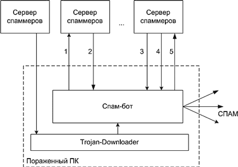

Спам-бот — это автономная троянская программа, осуществляющая рассылку спама зараженного компьютера по заданному алгоритму. Данный метод рассылки спама является самым эффективным по ряду критериев, в частности против него практически бесполезны фильтры по IP-адресам. Кроме рассылки спама, спам-бот может решать ряд сопутствующих задач, в частности пополнять базы данных спамеров почтовыми адресами, найденными на компьютерах пользователей. Механизм работы спам-бота показан на рис. 1

Рис. 1. Схема работы спам-бота
Наиболее популярные виды распространения спама
Первый
Рассылка с применением web-интерфейса почтовых серверов.